ภาพรวมบทนี้: L3–L8 เป็นเรื่อง ระบบต้องทำอะไร (requirement, use case, DFD, UI) บทนี้ข้ามมาฝั่ง design คือ จะสร้างซอฟต์แวร์ให้มีโครงสร้างแบบไหน
เนื้อหามี 3 ส่วน: (1) architectural design กับ detailed design ต่างกันยังไง และมี architectural styles 6 แบบ (2) structured design แปลง DFD เป็น structure chart ด้วย transform mapping และ factoring มีตัวอย่างระบบควบคุมหุ่นยนต์กับระบบไปรษณีย์ (3) design principles ที่ใช้ตัดสินว่า design ไหนดีกว่า โดยเฉพาะ cohesion กับ coupling มีแบบฝึกหัดหลายข้อ
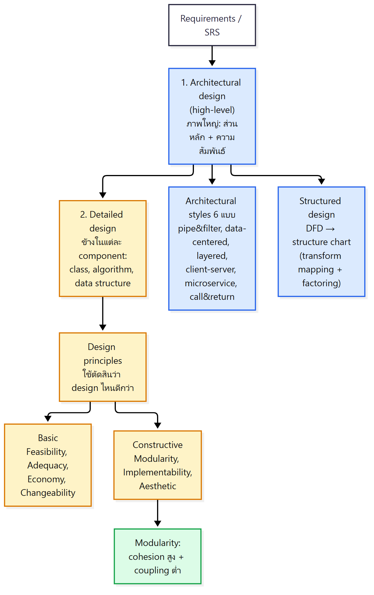
1. ทำไมต้องออกแบบ? (สไลด์ 4–6, 9)
แก่น: ความต้องการเดียวกันสร้างได้หลายแบบ ก่อนลงมือเขียนโค้ดจึงต้องตัดสินใจว่าซอฟต์แวร์จะมี component อะไร และแต่ละอันสัมพันธ์กันยังไง
- สไลด์ 4 – สะพานหลายแบบ: beam, arch, truss, cantilever, suspension, cable-stayed "and several more" ทุกแบบทำหน้าที่เดียวกันคือข้ามแม่น้ำ แต่โครงสร้างต่างกัน
- สไลด์ 5 – HelloWorld 3 แบบ: ทุกแบบพิมพ์ "Hello World!" เหมือนกัน แต่โครงสร้างต่างกัน
| แบบ | โครงสร้าง |
|---|---|
| 1 | class HelloWorld เดียว เรียก System.out.println("Hello World!") ใน main ตรง ๆ |
| 2 | แยก class MessagePrinter ที่มี getMessage() คืน "Hello World!" แล้ว main เรียกมาพิมพ์ |
| 3 | แยกละเอียดขึ้นอีก: HelloProvider.getHello() คืน "Hello", WorldProvider.getWorld() คืน "World" และ MessagePrinter.printMessage() เอามาต่อกันเป็น "Hello World!" แล้วพิมพ์ |
- สไลด์ 6 – Design Architecture and Methodology
- เริ่มจาก requirements
- ตอบคำถาม: ซอฟต์แวร์จะมีโครงสร้างอย่างไร? มี component อะไรบ้าง? และ component เหล่านั้นสัมพันธ์กันอย่างไร?
- แบ่งเป็น 2 ส่วน: Architectural (high-level) design และ Detailed design
- สไลด์ 9 – An Architectural Design Method: ลูกค้าบอก requirement ว่า "four bedrooms, three baths, lots of glass ..." → architectural design → implementation ในสไลด์มีข้อความ "It's a miracle!" ประกอบด้วย
💡 เปรียบเหมือนสร้างบ้าน ลูกค้าบอกแค่ "4 ห้องนอน 3 ห้องน้ำ" สถาปนิกต้องออกแบบก่อนช่างจะสร้างได้
2. Architectural design กับ Detailed design ต่างกันยังไง? (สไลด์ 7–13)
แก่น: architectural design = ภาพใหญ่ คือส่วนหลักของระบบกับความสัมพันธ์ระหว่างกัน ส่วน detailed design = ลงไปข้างในแต่ละส่วน คือ class, algorithm, data structure โดย detailed design มาจากทั้ง requirements และ architecture
2.1 สองอย่างนี้สัมพันธ์กันยังไง? (สไลด์ 7)
แก่น: detailed design มาจาก requirements & architecture
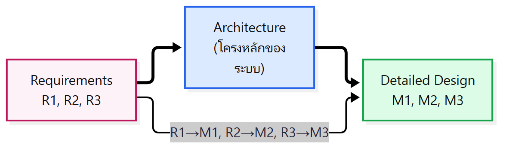
- requirement แต่ละข้อ (R1, R2, R3) ส่งผลต่อ architecture ก่อน
- จากนั้น requirement แต่ละข้อจะถูกทำจริงใน module (M1, M2, M3) ที่อยู่ใน detailed design
- detailed design จึงอยู่ในกรอบที่ architecture วางไว้
2.2 Analysis model กลายเป็น Design model ยังไง? (สไลด์ 8, จาก Pressman)
แก่น: model จากขั้น analysis ทั้ง 4 กลุ่ม เป็น input ของ design model ซึ่งมี 4 ชั้น
| Analysis Model (4 กลุ่ม element) | ตัวอย่าง diagram ในกลุ่ม |
|---|---|
| Scenario-based elements | use-cases (text), use-case diagrams, activity diagrams, swim lane diagrams |
| Class-based elements | class diagrams, analysis packages, CRC models, collaboration diagrams |
| Flow-oriented elements | data flow diagrams, control-flow diagrams, processing narratives |
| Behavioral elements | state diagrams, sequence diagrams |
Design Model เป็นพีระมิด 4 ชั้น (จากฐานขึ้นยอด):
- Data/Class Design (ฐาน)
- Architectural Design
- Interface Design
- Component-Level Design (ยอด)
ในสไลด์มีลูกศรจาก analysis element หลายกลุ่มชี้ไปยังหลายชั้นของ design model
💡 เชื่อมกับบทก่อน: use case (L4) และ DFD (L6–L7) ที่เรียนมา คือ analysis model ที่เอามาใช้ตอน design
2.3 Architectural design คืออะไร? (สไลด์ 10)
แก่น: กำหนด "ส่วนหลัก" ของโปรแกรม: หน้าที่ คุณสมบัติ interface และความสัมพันธ์/การโต้ตอบระหว่างกัน
นิยาม: an activity of specifying a program's major parts; their responsibilities, properties, and interfaces; and the relationships and interactions among them.
Key Components of Architectural Design
- Layers & Modules – ระบบแบ่งเป็นชั้นหรือโมดูลใหญ่อะไรบ้าง
- Components & Services – มี component และ service อะไร
- Data Flow & Storage – ข้อมูลไหลและถูกเก็บที่ไหน
- Security & Performance – ความปลอดภัยและประสิทธิภาพระดับระบบ
- Scalability & Maintainability – ขยายระบบและดูแลต่อได้แค่ไหน
- Integration & APIs – เชื่อมกับระบบอื่นผ่าน API ยังไง
2.4 Detailed design คืออะไร? (สไลด์ 11)
แก่น: ลงลึกในแต่ละ component ว่าข้างในมี element อะไร สัมพันธ์กันยังไง รวมถึงออกแบบ data structure และ algorithm
Key Components of Detailed Design
- Module-Level Design – ออกแบบภายในแต่ละโมดูล
- Class & Object Design – class/object และความสัมพันธ์
- Function & Algorithm Design – function และ algorithm ที่ใช้
- Database Schema – โครงสร้างตารางฐานข้อมูล
- Interface & API Design – รายละเอียด interface/API
- Error Handling & Logging – จัดการ error และบันทึก log
- Security Considerations – เรื่องความปลอดภัยระดับรายละเอียด
| Architectural design | Detailed design | |
|---|---|---|
| ระดับ | high-level ทั้งระบบ | ข้างในแต่ละ component |
| สนใจ | ส่วนหลัก หน้าที่ คุณสมบัติ interface ความสัมพันธ์ | internal elements, class, data structure, algorithm |
| ตัวอย่างหัวข้อ | layers, services, data flow, scalability | class design, algorithm, DB schema, error handling |
2.5 แบบฝึก: ข้อไหนเป็น Architectural หรือ Detailed? (สไลด์ 12–13, จาก Christopher Fox)
แก่น: ถ้าพูดถึงส่วนหลักของระบบหรือคุณสมบัติทั้งระบบ = architectural ถ้าพูดถึง algorithm, data structure หรือ class ตัวใดตัวหนึ่ง = detailed
⚠️ สไลด์ไม่มีเฉลย คำตอบด้านล่างคิดจากนิยามในสไลด์ 10–11 ควรเช็กกับเฉลยในห้อง
| ข้อ | โจทย์ | แนวคำตอบ | เหตุผล (อิงสไลด์ 10–11) |
|---|---|---|---|
| 1 | find() ต้องใช้ binary search |
Detailed | ระบุ algorithm (Function & Algorithm Design) |
| 2 | ต้อง แยกโค้ด UI ออกจากโค้ดส่วนอื่น | Architectural | แบ่งส่วนหลักของโปรแกรม (Layers & Modules) |
| 3 | client ต้องประมวลผลไม่เกิน 1 วินาที และ server ไม่เกินครึ่งวินาที | Architectural | กำหนด property ของส่วนหลัก (client, server) ด้าน performance |
| 4 | class Register ต้องเก็บ client ใน hash table |
Detailed | ระบุ data structure ใน class หนึ่ง |
| 5 | utilities ทุกตัวใน graphics library ต้อง thread-safe | Architectural | กำหนด property ของส่วนหลัก (library ทั้งก้อน) |
| 6 | Car object ทุกตัวต้อง register กับ Clock object และ Clock จะแจ้ง Car ทุกวินาที | Detailed | การโต้ตอบระดับ object (Class & Object Design) |
| 7 | observer ทุกตัวของ class Clock ต้อง implement class ClockUser |
Detailed | ระดับ class/interface ของ class เฉพาะ |
3. Architectural styles มีแบบไหนบ้าง? (สไลด์ 14–22)
แก่น: มี 6 แบบ: batch sequential/pipe and filter, data-centered, layered, client-server, microservice และ call and return แต่ละแบบมีข้อดีข้อเสียต่างกัน
3.1 Batch sequential / Pipe and filter ทำงานยังไง? (สไลด์ 15–16)
แก่น: ข้อมูลเข้ามาแล้วผ่านการแปลง (filter) ทีละขั้นต่อกันด้วยท่อ (pipe) จนได้ output
Batch sequential – filter ต่อกันเป็นสายตรง
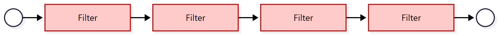
Pipe and filter – แตกแขนงและรวมกันได้
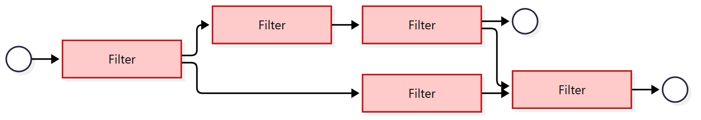
(รูปในสไลด์มีเส้นย้อนกลับจาก filter ตัวหลังไปหาตัวก่อนหน้าด้วย 1 เส้น)
- ข้อมูลเข้าระบบ แล้วถูก transform ต่อกันหลายขั้น ก่อนได้ output
- pipe = ตัวส่งข้อมูล, filter = ตัวแปลงข้อมูล
| Pros | Cons |
|---|---|
| ใช้ filter เดิมซ้ำเพื่อประกอบเป็น configuration ใหม่ได้ (reusability) | ไม่เหมาะกับ interactive application เพราะต้องรอผ่านการแปลงทุกขั้นจึงได้ output |
| เหมาะกับงานที่ต้องคำนวณ เป็นลำดับขั้นที่อิสระต่อกัน | อาจต้องเพิ่ม filter เพื่อให้ component ที่อิสระต่อกันทำงานเข้ากันได้ |
| ถ้า component ไม่ได้ออกแบบให้อิสระต่อกัน → อาจเกิด tight coupling |
💡 เปรียบเหมือนสายพานโรงงาน ของเข้ามาแล้วผ่านทีละสถานี
3.2 Data-centered architecture คืออะไร? (สไลด์ 17)
แก่น: ข้อมูลกลางเก็บใน central repository ทุก subsystem เข้าถึง แก้ไข ลบ อัปเดตได้
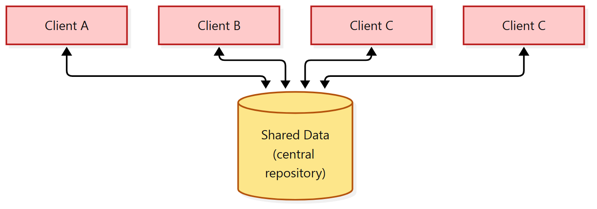
(วาดตามสไลด์ ซึ่งตั้งชื่อ client ไว้ว่า Client A, B, C, C คือมี "Client C" ซ้ำ 2 ตัว)
| Pros | Cons |
|---|---|
| แชร์ข้อมูลปริมาณมากได้อย่างมีประสิทธิภาพ | แก้ data model ยากและแพง |
| แต่ละ component ทำงานอิสระได้ | ทุก subsystem ต้องใช้ data model เดียวกัน ซึ่งมักต้องยอมประนีประนอม |
| จัดการข้อมูลได้สม่ำเสมอ เพราะ backup ที่ศูนย์กลาง |
3.3 Layered architecture คืออะไร? (สไลด์ 18)
แก่น: ระบบเป็นชั้นซ้อนกัน แต่ละชั้นพึ่งพาเฉพาะชั้นที่อยู่ล่างลงไป
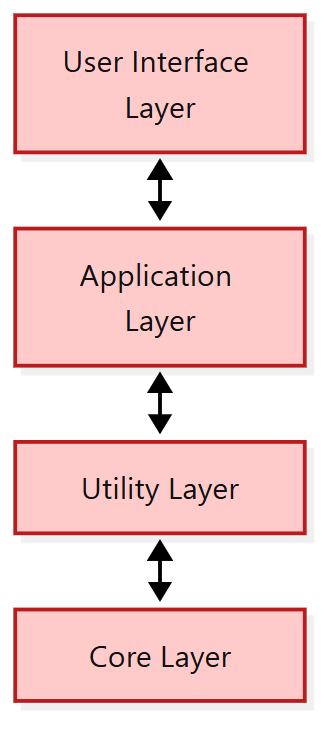
ตัวอย่างชั้นในสไลด์ (บนลงล่าง): User Interface → Application → Utility → Core
| Pros | Cons |
|---|---|
| portable ย้ายไปใช้ต่าง platform ได้ | แยกชั้นให้ชัดเจนจริง ๆ ทำได้ยาก |
| แตกปัญหาซับซ้อนเป็นส่วนย่อยที่จัดการได้ | ชั้นเยอะ → performance ลดลง |
| เปลี่ยนชั้นได้ ถ้า interface ของชั้นนั้นไม่เปลี่ยน |
3.4 Client-Server architecture คืออะไร? (สไลด์ 19)
แก่น: แบ่งเป็น 2 ฝั่ง: server = ผู้ให้บริการ, client = ผู้ขอบริการ ทั้งสองคุยกันแบบ request/reply
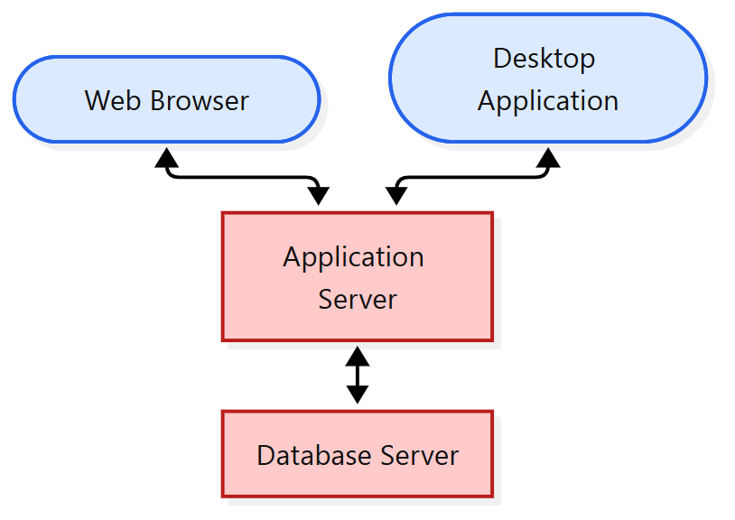
| Pros | Cons |
|---|---|
| ทำเป็น distributed system ได้ | จัดการยาก ถ้า server อยู่ในมือ third party |
| เพิ่ม server ใหม่หรืออัปเกรดได้ง่าย | server รับ request เยอะเกินจนล่มได้ |
3.5 Microservice architecture คืออะไร? (สไลด์ 20, จาก Martin Fowler)
แก่น: แอปเดียวที่ประกอบจาก service เล็ก ๆ หลายตัว แต่ละตัวรันใน process ของตัวเองและ deploy แยกกันได้
- พัฒนา single application เป็น ชุดของ service เล็ก ๆ
- แต่ละ service:
- รันใน process ของตัวเอง และสื่อสารด้วยกลไกแบบเบา ๆ ส่วนมากเป็น HTTP resource API
- deploy แยกได้อิสระ ด้วยระบบ deploy อัตโนมัติเต็มรูปแบบ
- รูปในสไลด์เทียบ 2 แบบ:
- monolith – single database: ทุกฟังก์ชันอยู่ในก้อนเดียว ใช้ฐานข้อมูลก้อนเดียว
- microservices – application databases: แยกเป็นหลาย service แต่ละตัวมีฐานข้อมูลของตัวเอง
⚠️ สไลด์นี้ไม่มีตาราง Pros/Cons เหมือนแบบอื่น
3.6 Call and Return architecture คืออะไร? (สไลด์ 21–22)
แก่น: แตก main program เป็น component ย่อยที่เรียกต่อกันเป็นลำดับชั้น เป็นสถาปัตยกรรมที่ใช้มากที่สุดตั้งแต่เริ่มมีการพัฒนาซอฟต์แวร์
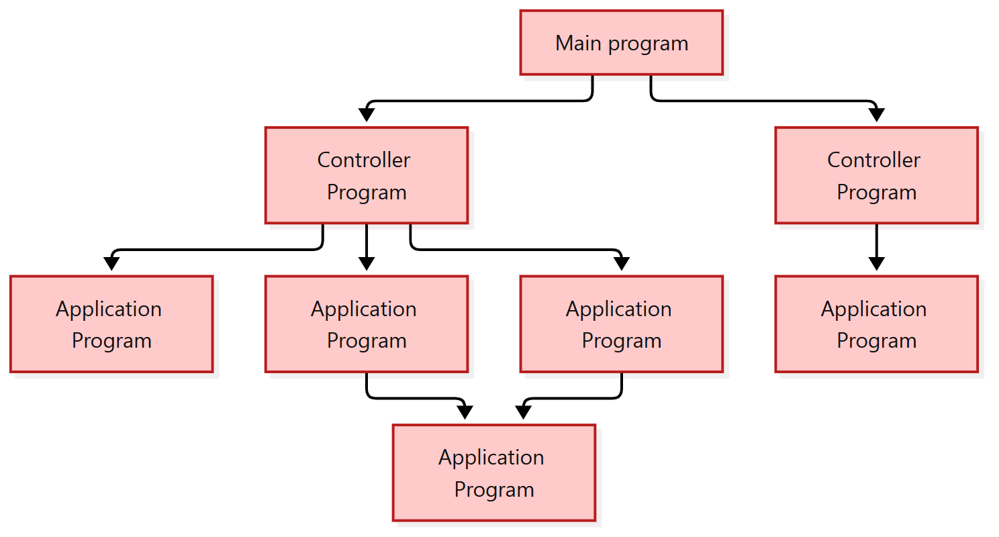
- most dominant architecture ตั้งแต่ยุคแรกของการพัฒนาซอฟต์แวร์
- แตก main program เป็น program component หลายตัว ซึ่งเรียก component อื่นต่อได้
| Pros | Cons |
|---|---|
| จัดโค้ดเป็น modular ได้ | interface ไม่ชัด → tight coupling ระหว่างข้อมูล |
| scale และแก้ไขได้ง่ายเมื่อจำเป็น | แก้ data structure ภายใน อาจกระทบโมดูลอื่น |
3.7 เทียบ 6 styles
| Style | หลักคิด 1 บรรทัด | จุดเด่น | จุดอ่อน |
|---|---|---|---|
| Pipe and filter | แปลงข้อมูลต่อกันเป็นขั้น | reuse filter | ไม่เหมาะกับ interactive |
| Data-centered | ทุกส่วนใช้ข้อมูลกลาง | แชร์ข้อมูลมาก, backup ที่เดียว | แก้ data model แพง |
| Layered | ชั้นพึ่งชั้นล่างเท่านั้น | portable, เปลี่ยนชั้นได้ | ชั้นเยอะ = ช้า |
| Client-server | ผู้ให้ vs ผู้ขอบริการ | distributed, เพิ่ม server ง่าย | server ล้นได้ |
| Microservice | service เล็ก ๆ deploy แยก | แยก process / deploy อิสระ | (สไลด์ไม่ระบุ) |
| Call and return | main → controller → sub-program | modular, scale ง่าย | interface ไม่ชัด = coupling สูง |
4. แปลง DFD เป็นโครงสร้างโปรแกรมยังไง? (Structured design) (สไลด์ 23–31)
แก่น: นำ DFD มา map เป็นสถาปัตยกรรมแบบ call and return ที่เขียนเป็น structure chart: ตัดเขตขาเข้า/ขาออก แล้วแตกเป็นโมดูล โมดูลบนตัดสินใจ โมดูลล่างทำงานจริง
4.1 Deriving architectural design (สไลด์ 23)
- รูปในสไลด์: วง (bubble) ของ DFD ถูกตีเส้นแบ่งกลุ่ม แล้วแต่ละกลุ่มกลายเป็นกล่องใน Call and Return Architecture (กล่องบนสุด → กล่องชั้นกลาง → กล่องชั้นล่าง)
4.2 Structured design คืออะไร? (สไลด์ 24)
แก่น: วิธีได้ program architecture ที่แบ่งเป็นส่วน ๆ โดย map DFD เป็นโครงสร้างโปรแกรม แล้วเขียนออกมาเป็น structure chart
- Objective: ได้ program architecture ที่ partitioned (แบ่งเป็นส่วนชัดเจน)
- Approach:
- map DFD เป็น program architecture
- ใช้ process specification (PSPEC) และ state transition diagram (STD) บอกว่าแต่ละโมดูลมีอะไรข้างใน
- Notation: structure chart
4.3 Transform flow กับ Transaction flow ต่างกันยังไง? (สไลด์ 25)
แก่น: transform flow = ข้อมูลไหลผ่านการแปลงเป็นสายต่อเนื่อง ส่วน transaction flow = มีจุดศูนย์กลาง (transaction center) ที่แยกข้อมูลไปหลายเส้นทาง
| Transform flow | Transaction flow | |
|---|---|---|
| ลักษณะในรูป | วงเรียงต่อกันเป็นสาย แยกออกบ้างเล็กน้อย | มี วงกลางหนึ่งวง ที่แตกออกเป็น หลาย action path |
| จุดสังเกต | ไหลจากขาเข้าไปขาออก | มี transaction center (สไลด์ 26 ใช้คำนี้) |
4.4 ขั้นตอน mapping ทั่วไป (สไลด์ 26–27)
แก่น: ตัดเขต → map จากขอบออกไป → เพิ่ม control module → refine → factoring 2 ระดับ
- แยก incoming และ outgoing flow boundaries ถ้าเป็น transaction flow ให้ แยก transaction center ออกมา
- map จาก boundary ออกไปด้านนอก: แต่ละ transform ใน DFD → โมดูลที่สอดคล้องกัน
- เพิ่ม control module ตามที่จำเป็น
- refine โครงสร้างที่ได้ ด้วยแนวคิด effective modularity
- ทำ "first-level factoring"
- โครงสร้างที่ได้มี การกระจาย control แบบ top-down
- โมดูลบน = ตัดสินใจ (decision-making)
- โมดูลล่าง = ทำงาน input, computation, output ส่วนใหญ่
- โมดูลกลาง = control บ้าง ทำงานปานกลาง
- ทำ "second-level factoring"
4.5 Transform mapping หน้าตาเป็นยังไง? (สไลด์ 28)
แก่น: DFD a→j ถูกแบ่งเป็น 3 ช่วง (ขาเข้า / กลาง / ขาออก) แต่ละช่วงกลายเป็นกิ่งใต้โมดูลบนสุด
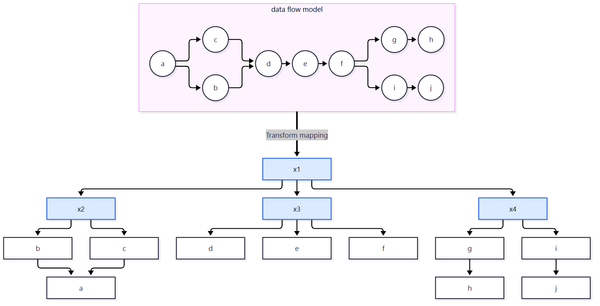
- DFD ถูกตีเส้นแบ่ง 2 เส้น: ช่วง a, b, c | ช่วง d, e, f | ช่วง g, h, i, j
- x1 อยู่บนสุด มีลูก 3 ตัว:
- x2 คุมช่วงขาเข้า (b, c → a)
- x3 คุมช่วงกลาง (d, e, f)
- x4 คุมช่วงขาออก (g → h, i → j)
4.6 Factoring คืออะไร? (สไลด์ 29)
แก่น: ยิ่งอยู่สูงยิ่งตัดสินใจมาก ยิ่งอยู่ต่ำยิ่งเป็น "worker" ที่ทำงานจริง
- โมดูลด้านบน = typical "decision making" modules
- โมดูลด้านล่าง (แรเงาในรูป) = typical "worker" modules
- ลูกศรขึ้นในรูป = direction of increasing decision making
💡 เปรียบเหมือนบริษัท ผู้จัดการ (บน) ตัดสินใจ พนักงาน (ล่าง) ลงมือทำ
4.7 First-level factoring (สไลด์ 30)
แก่น: ชั้นแรกแตก main controller เป็น 3 ตัว: input, processing, output controller
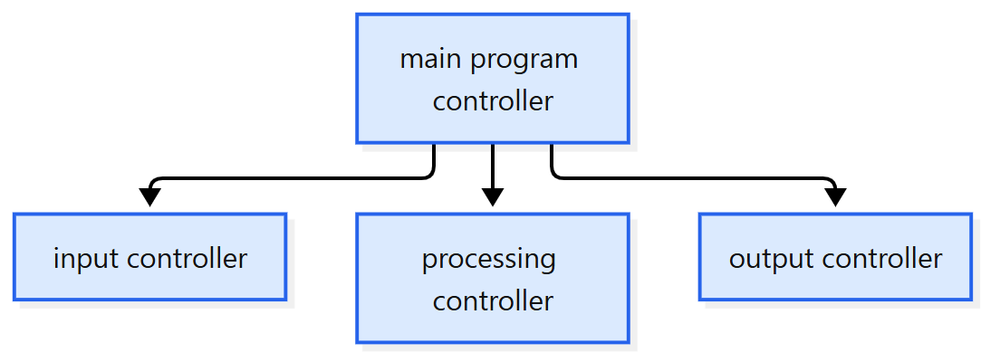
4.8 Second-level mapping (สไลด์ 31)
แก่น: แตกต่อลงไปอีกชั้น โดย map วงใน DFD เป็นโมดูลใต้ control "จาก flow boundary ออกไป"
- ตัวอย่างในสไลด์: วง D, C, B, A ใน DFD (อยู่ในขอบเขตเส้นโค้ง) → กลายเป็นโมดูล A, B, C, D ใต้ main → control
- ข้อความในรูป: "mapping from the flow boundary outward"
5. ตัวอย่าง: ระบบควบคุมหุ่นยนต์ (สไลด์ 32–36)
แก่น: เริ่มจาก DFD level 1 → แตกเป็น level 2 → แยก flow path → map เป็น structure chart → refine จนทุก action path แตกครบ
5.1 Level 1 DFD (สไลด์ 32)
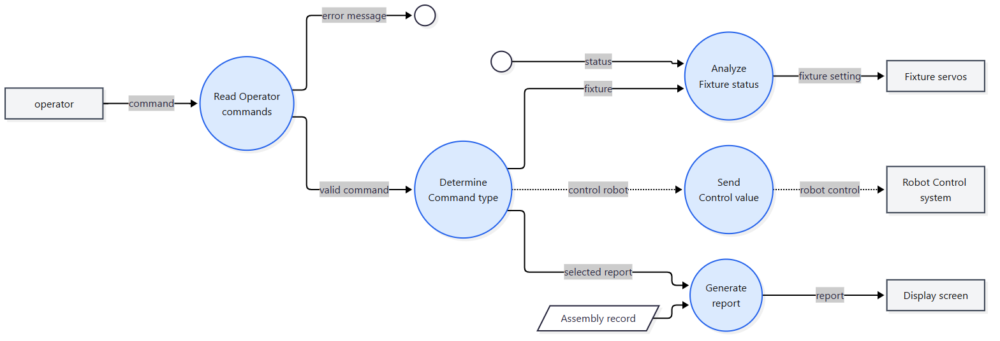
| Process | รับเข้า | ส่งออก |
|---|---|---|
| Read Operator commands | command (จาก operator) | error message, valid command |
| Determine Command type | valid command | fixture, selected report, control robot |
| Analyze Fixture status | fixture, status | fixture setting → Fixture servos |
| Generate report | selected report, Assembly record (data store) | report → Display screen |
| Send Control value | control robot | robot control → Robot Control system |
(เส้นประในสไลด์ = control robot / robot control / Send Control value)
⚠️ ในแผนภาพนี้ data store Assembly record วาดเป็นกล่องเอียงเพื่อให้แยกออกง่าย แต่ในสไลด์ (และ DFD ที่ต้องวาดในข้อสอบ) data store เป็น เส้นขนาน 2 เส้น มีชื่ออยู่ระหว่างเส้น
5.2 Level 2 DFD และการแยก flow path (สไลด์ 33–34)
Level 2 แตก process ละเอียดขึ้น:
| ช่วง | Process ใน level 2 | ข้อมูลที่ไหล |
|---|---|---|
| รับคำสั่ง | Read command → Valid command → Produce error msg | command, invalid command, error message |
| แยกประเภท | Determine type | valid command → fixture / selected report / robot control |
| fixture | Read fixture status → Determine setting → Format setting | status, combined status, raw setting, fixture setting |
| report | Read record → Calculate output values → Format report | Assembly record, record, values, report |
| ควบคุม | Send control value | robot control, start/stop |
- สไลด์ 34 (Isolate Flow Paths) ใช้ DFD เดียวกับสไลด์ 33 เพื่อแยก flow path ออกจากกัน
5.3 Map เป็น structure chart แล้ว refine (สไลด์ 35–36)
แก่น: บนสุด = process operator commands แตกเป็น command input controller กับ determine type แล้วแตกทุก action path ลงไปจนถึง worker
- สไลด์ 35 (Map the Flow Model): ได้ชั้นแรก ตัวใต้ determine type (fixture status controller, report generation controller, send control value) มีหมายเหตุ "each of the action paths must be expanded further"
- สไลด์ 36 (Refining the Program Architecture): แตกต่อจนครบ
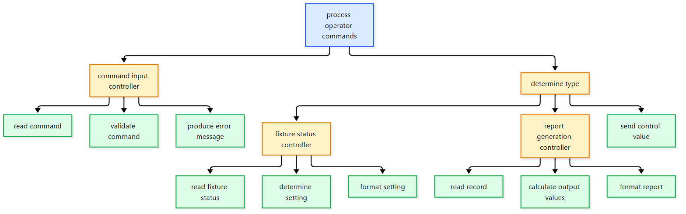
💡 สังเกต: ชั้นบน (ฟ้า) ตัดสินใจ ชั้นกลาง (เหลือง) เป็น controller ชั้นล่าง (เขียว) เป็น worker ตรงกับหลัก factoring ในหัวข้อ 4.6
6. Logical module กับ Physical module ต่างกันยังไง? (สไลด์ 37–39)
แก่น: logical module = กิจกรรมทางธุรกิจ (ทำอะไร) ส่วน physical module = กระบวนการจริงที่ใช้ทำกิจกรรมนั้น (ทำยังไง)
- Logical module: กำหนด business activities ที่ประกอบเป็น business process
- Physical module: กำหนด physical process ที่ใช้ทำ business activity นั้นจริง
- ตัวอย่างในสไลด์ 37:
- logical = Login (กล่องเดียว)
- physical = Two Factor Authentication ข้างในมี 2 ขั้น: External Password to First Authentication Server → External Password to Second Authentication Server
6.1 Structure chart ขั้น Analysis (logical) – ระบบไปรษณีย์ (สไลด์ 38)
Functional decomposition: แตก Postal System เป็นฟังก์ชันย่อย
| โมดูลหลัก | โมดูลย่อย |
|---|---|
| 1. Create Parcel | 1.1 Log in, 1.3 Parcel detail, 1.4 Calculate weight, 1.5 Create tracking number, 1.6 Update Parcel History |
| 2. Update Parcel information | 2.1 Log in, 2.2 Get parcel information, 2.3 Get delivery information, 2.4 Update delivery information |
| 3. View history and status | 3.1 View history report, 3.2 View status report |
| 4. Feedback | 4.1 Get comment of customer, 4.1 Record comment |
| 5. Bank@post | 5.1 Log in, 5.2 Get Customer acc. & Receiver acc., 5.3 Get Transaction Confirmation, 5.4 deduct balance |
| 6. Pay Online | 6.1 Log in, 6.2 Get Bill no., 6.3 Get Payment confirmation, 6.4 deduct balance |
⚠️ สไลด์ 38 เลขข้อไม่ต่อเนื่อง: ข้าม 1.2 (จาก 1.1 ไป 1.3) และใน Feedback มี "4.1" ซ้ำ 2 ช่อง (ช่องที่ 2 น่าจะเป็น 4.2) ถ้าต้องอ้างเลขข้อให้ถามอาจารย์
6.2 Structure chart ขั้น Design (physical) (สไลด์ 39)
แก่น: ขั้น design รวมงานที่ซ้ำกันเป็นโมดูลกลางตัวเดียว เช่น Login และ Deduct Balance ที่หลายโมดูลเรียกใช้ร่วมกัน แล้วเขียนเป็นโค้ดได้
| โมดูลหลัก | โมดูลย่อยใน physical chart |
|---|---|
| Create Parcel | Fill Parcel Detail, Create Tracking Number, Calculate Weight, Update Parcel History |
| Update Parcel Info | Get Delivery Info, Update Delivery Info |
| Bank@Post | Get Transaction Confirmation, Get Cust. & Receiver Acc |
| Pay Online | Get Bill Info, Get Customer Confirmation |
| View History and Status | View History Report, View Status Report |
| Feedback | Record Customer Comment, Get Customer Comment |
| โมดูลที่ใช้ร่วม | Login และ Deduct Balance (มีเส้นจากหลายโมดูลมาที่กล่องเดียว) |
- เทียบกับ analysis chart: ในขั้น analysis "Log in" ปรากฏแยกในหลายโมดูล (1.1, 2.1, 5.1, 6.1) และ "deduct balance" อยู่ทั้งใน 5.4 และ 6.4 แต่ในขั้น design เหลือกล่อง Login กับ Deduct Balance อย่างละกล่องเดียว
โค้ดตัวอย่างในสไลด์ที่ได้จาก structure chart:
Create_Parcel() {
parcelDetail = Fill_Parcel_Detail();
trackNo = Create_Tracking_Number();
weight = Calculate_Weight(Parcel_Detail);
Update_Parcel_History(parcelDetail, trackNo, weight);
}
Fill_Parcel_Detail() {
If not login_status {
login();
}
…
return(parcelDetail);
}
Create_Parcel()เรียกโมดูลลูกทั้ง 4 ตัวตามลำดับ (ตรงกับกิ่งใน chart)Fill_Parcel_Detail()เรียกlogin()ถ้ายังไม่ได้ login (นี่คือเส้นที่ลากไปหากล่อง Login)
⚠️ ในโค้ดสไลด์
Calculate_Weight(Parcel_Detail)ใช้Parcel_Detailขณะที่ตัวแปรที่ประกาศคือparcelDetailเขียนไม่ตรงกัน
7. กระบวนการออกแบบและ design principles (สไลด์ 40–43)
แก่น: design เริ่มจาก SRS → สร้าง architecture ทางเลือกหลายแบบ → ประเมิน → ได้ design document โดยใช้ design principles เป็นเกณฑ์ตัดสินว่าแบบไหนดีกว่า
7.1 Software Engineering Design Process (สไลด์ 40)
- เริ่มจาก SRS (Software Requirements Specification)
- สร้าง candidate architectures หลายแบบ
- ประเมิน candidates
- ได้ design document
7.2 Design principles มีกลุ่มอะไรบ้าง? (สไลด์ 41–43)
แก่น: design principles = ข้อความที่บอกว่าอะไรทำให้ design ดีขึ้น แบ่ง 2 กลุ่ม: Basic (ตอบโจทย์ stakeholder) และ Constructive (จากประสบการณ์)
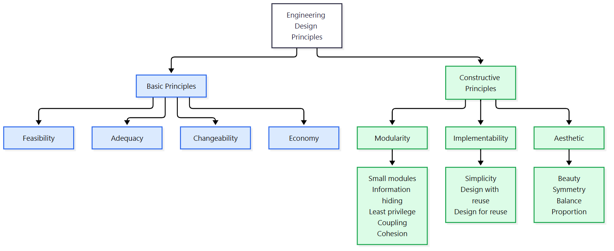
Basic principles: คุณลักษณะที่ทำให้ design ตอบ ความต้องการของ stakeholder ได้ดีขึ้น
| หลัก | ความหมาย |
|---|---|
| Feasibility | design ยอมรับได้ ก็ต่อเมื่อสร้างได้จริง |
| Adequacy | ตอบความต้องการ stakeholder ได้มากกว่า (ภายใต้ข้อจำกัด) = ดีกว่า |
| Economy | สร้างได้ ถูกกว่า เร็วกว่า เสี่ยงน้อยกว่า = ดีกว่า |
| Changeability | ทำให้โปรแกรม แก้ไขง่ายกว่า = ดีกว่า |
Constructive principles: จาก ประสบการณ์ ว่าลักษณะบางอย่างทำให้ design ดีขึ้น
| หลัก | ความหมาย |
|---|---|
| Modularity | design ที่ดีเป็น modular หลักกลุ่มนี้ใช้ประเมินว่าโมดูลดีไหม |
| Implementability | design ที่ดี สร้างง่าย หลักกลุ่มนี้ใช้ประเมินว่าจะ implement ง่ายไหม |
| Aesthetic | design ที่ดี สวยงาม หลักกลุ่มนี้ใช้เลือก design ที่สวย |
8. Modularity: ทำไมต้องแบ่งเป็นโมดูล และแบ่งยังไงให้ดี? (สไลด์ 44–48)
แก่น: โปรแกรม modular ประกอบด้วยหน่วยที่ชัดเจน เรียบง่าย อิสระ และคุยกันผ่าน interface ที่ชัดเจน ทำให้เข้าใจ แก้ไข และทดสอบง่าย
8.1 Modular program คืออะไร? (สไลด์ 44)
นิยาม: composed of well-defined, conceptually simple, and independent units that communicate through well-defined interfaces
ระดับของ "หน่วย" ในโปรแกรม (ใหญ่ → เล็ก):
- Sub-programs หรือ sub-systems
- Packages, compilation units
- Classes, functions
- Attributes, operations, blocks
- Lines of code
8.2 ข้อดีของ modularity (สไลด์ 45)
- เข้าใจและอธิบายง่ายกว่า
- ทำเอกสารง่ายกว่า
- แก้ไขง่ายกว่า
- test และ debug ง่ายกว่า
- tune (ปรับแต่งประสิทธิภาพ) ง่ายกว่า
8.3 Software modularity มีระดับไหนบ้าง? (สไลด์ 46)
รูปในสไลด์เป็นชั้นซ้อน (บนลงล่าง): Services → Components → Objects → Modules
8.4 Modularity principles มี 5 ข้อ (สไลด์ 47–49)
แก่น: โมดูลเล็ก ซ่อนรายละเอียดข้างใน ได้สิทธิ์เท่าที่ต้องใช้ cohesion สูง และ coupling ต่ำ
| หลัก | ความหมาย |
|---|---|
| Small modules | โมดูล เล็ก ดีกว่า |
| Information hiding | แต่ละโมดูล ซ่อนรายละเอียดโครงสร้างและการทำงานภายใน จากโมดูลอื่น |
| Least privilege | โมดูล ไม่ควรเข้าถึง resource ที่ไม่จำเป็น |
| Cohesion | "degree of relatedness" ระดับความเกี่ยวข้องกัน ภายใน หน่วย/โมดูล/object/component |
| Coupling | "degree of dependence" ระดับการพึ่งพากัน ระหว่าง หน่วย/โมดูล/component |
9. Cohesion กับ Coupling (สไลด์ 49–55)
แก่น: cohesion = ของในโมดูลเกี่ยวกันแค่ไหน (ยิ่งสูงยิ่งดี) ส่วน coupling = โมดูลพึ่งกันแค่ไหน (ยิ่งต่ำยิ่งดี) เป้าหมายคือ high cohesion + low coupling
9.1 Cohesion ดูยังไง? (สไลด์ 50–51)
แก่น: โมดูลที่ทำหน้าที่เดียวเรื่องเดียว = cohesion สูง ส่วนโมดูลที่ทำหลายเรื่องไม่เกี่ยวกัน = cohesion ต่ำ
ตัวอย่างในสไลด์ (class Staff 2 แบบ):
| Low cohesion 👎 | High cohesion 👍 |
|---|---|
checkEmail(), sendEmail(), emailValidate(), printLetter() |
attribute -salary, -email + setSalary(), getSalary(), setEmail(), getEmail() |
| method หลายเรื่องที่ไม่ได้เกี่ยวกับข้อมูลของ Staff | ทุก method จัดการข้อมูลของ Staff เอง |
ระดับ cohesion (สไลด์ 51) – "The higher the better"
| ระดับ | ความหมาย |
|---|---|
| Functional (สูงสุด) | ทำ หน้าที่เดียว (performing 1 single function) |
| ⋮ | |
| Coincidental (ต่ำสุด) | ทำ มากกว่า 1 หน้าที่ที่ไม่เกี่ยวกัน |
9.2 Coupling ดูยังไง? (สไลด์ 52–54)
แก่น: coupling สูงทำให้แก้ระบบยาก เพราะแก้ component เดียวกระทบทุกตัวที่เชื่อมอยู่
รูปในสไลด์ 52 มี 3 แบบ:
- No dependencies – กล่องไม่เชื่อมกันเลย
- Loosely coupled – some dependencies มีลูกศรบ้าง
- Highly coupled – many dependencies ลูกศรเต็มไปหมด
"High coupling makes modifying parts of the system difficult, e.g., modifying a component affects all the components to which the component is connected."
ระดับ coupling (สไลด์ 53) – "The lower the better"
| ระดับ | ความหมาย |
|---|---|
| Content coupling (สูงสุด) | เข้าถึงข้อมูลภายใน หรือข้อมูลขั้นตอนการทำงาน ของอีกโมดูลโดยตรง |
| ⋮ | |
| Data coupling | ส่ง เฉพาะข้อมูลที่จำเป็น |
| No coupling | ในอุดมคติ แต่ทำจริงไม่ได้ |
⚠️ สไลด์ 53: ลูกศรเขียนว่า "data coupling is lowest" แต่ในรูปมี No Coupling อยู่ใต้ Data Coupling อีกช่อง และคำว่า "Ideal, but not practical" วางอยู่ข้าง Data Coupling ทั้งที่น่าจะหมายถึง No Coupling ถ้าเจอข้อสอบถามว่าระดับไหนต่ำสุด ให้เช็กกับอาจารย์
Data coupling (สไลด์ 54):
- นิยาม: 2 component เป็น data coupled ถ้าส่ง data item ที่เป็นเนื้อเดียวกัน (homogeneous)
- ทุก argument เป็น argument ธรรมดา หรือ data structure ที่ใช้ทุก element
- ดี ถ้าทำได้
- เขียน contract ได้ง่าย และแก้ component แยกกันได้อิสระ
9.3 Cohesion กับ Coupling สัมพันธ์กันยังไง? (สไลด์ 55)
| ระดับ | Cohesion | Coupling |
|---|---|---|
| High level | Strong | Tight |
| Low level | Weak | Loose |
💡 จำ: อยากได้ Strong cohesion + Loose coupling (cohesion ยิ่งสูงยิ่งดี ส่วน coupling ยิ่งต่ำยิ่งดี)
เปรียบเหมือนทีมงาน: คนในทีมทำงานเรื่องเดียวกัน (cohesion สูง) และแต่ละทีมไม่ต้องรอกันตลอดเวลา (coupling ต่ำ)
10. แบบฝึกหัด cohesion / coupling (สไลด์ 56–60)
แก่น: ดู 2 คำถาม: ข้างในโมดูลทำเรื่องเดียวไหม (cohesion) และโมดูลรู้ไส้ในหรือพึ่งกันมากไหม (coupling)
⚠️ สไลด์ไม่มีเฉลย แนวคำตอบด้านล่างอิงนิยามในสไลด์ 50–55 ควรเช็กกับเฉลยในห้อง
10.1 เติมคำ (สไลด์ 56)
| ข้อ | สถานการณ์ | แนวคำตอบ | อิงสไลด์ |
|---|---|---|---|
| 1 | โมดูลหนึ่งทำหลายหน้าที่ เช่น อ่านไฟล์ แสดงผล และคำนวณข้อมูล | Low cohesion | 51: หลายหน้าที่ไม่เกี่ยวกัน |
| 2 | โมดูลหนึ่งเรียกใช้ตัวแปรภายในของอีกโมดูลโดยตรง | High coupling (content coupling) | 53: เข้าถึง internal data |
| 3 | แต่ละโมดูลมีหน้าที่เฉพาะและไม่ซ้ำซ้อนกัน | High cohesion | 51 |
| 4 | โมดูลต่าง ๆ ติดต่อกันผ่าน interface ที่ชัดเจน | Low coupling | 44, 54 |
| 5 | เปลี่ยนโค้ดในโมดูลหนึ่งแล้วมักต้องแก้โมดูลอื่นด้วย | High coupling | 52 |
| 6 | โค้ดของโมดูลเป็นเอกภาพ เน้นทำงานเดียวให้สมบูรณ์ | High cohesion (functional) | 51 |
10.2 ข้อไหนออกแบบดีกว่า และดีกว่าด้านไหน? (สไลด์ 57–60)
| สไลด์ | Design A | Design B | แนวคำตอบ |
|---|---|---|---|
| 57 | print routine รับ name, address, billing info เป็น argument แยกกัน | print routine รับ customer data structure ก้อนเดียว | ด้าน coupling: A ส่งเฉพาะข้อมูลที่ใช้ ตรงกับ data coupling (สไลด์ 53–54) ส่วน B จะเป็น data coupling ก็ต่อเมื่อใช้ทุก element ใน structure |
| 58 | 2 โมดูลส่ง Customer ID / Customer Address ให้กันโดยตรง | Module A และ B ใช้ global data variable ร่วมกัน | A ดีกว่าด้าน coupling: ส่งเฉพาะข้อมูลที่จำเป็น ส่วน B พึ่งตัวแปรกลางร่วมกัน แก้ตัวแปรนั้นแล้วกระทบทั้งคู่ (สไลด์ 52) |
| 59 | FileReader ทำแค่ open / read / close file |
DataProcessor อ่านไฟล์ + คำนวณ + ส่ง email |
A ดีกว่าด้าน cohesion: ทำหน้าที่เดียว ส่วน B ทำหลายเรื่องไม่เกี่ยวกัน |
| 60 | Utility เป็น catch-all: file, คำนวณ, UI, data processing |
EmployeeDatabase ทุก method เกี่ยวกับข้อมูลพนักงาน |
B ดีกว่าด้าน cohesion: ทุกอย่างเกี่ยวกับเรื่องเดียว ส่วน A ทำหลายเรื่องไม่เกี่ยวกัน (coincidental) |
⚠️ สไลด์ 57: ถ้า customer data structure ใน Design B ใช้ทุก element จริง ก็นับเป็น data coupling ได้ตามนิยามสไลด์ 54 ข้อนี้จึงตีความได้ 2 ทาง ควรฟังเฉลยในห้อง
11. Implementability กับ Aesthetic principles (สไลด์ 61–63)
แก่น: design ที่ดีต้องสร้างง่าย (เรียบง่าย ใช้ของเดิมซ้ำ และสร้างของที่ใช้ซ้ำได้) และต้องสวย (เรียบ สม่ำเสมอ สมดุล ขนาดพอดี)
11.1 Implementability principles (สไลด์ 61)
| หลัก | ความหมาย |
|---|---|
| Simplicity | design ที่ ง่ายกว่า ดีกว่า |
| Design with reuse | design ที่ นำของที่มีอยู่แล้วมาใช้ซ้ำ ดีกว่า |
| Design for reuse | design ที่ สร้างของที่ใช้ซ้ำได้ ดีกว่า |
💡 with = ใช้ของเก่า | for = ทำของใหม่ให้คนอื่นใช้ต่อ
11.2 Aesthetic principles (สไลด์ 62)
| หลัก | ความหมาย |
|---|---|
| Beauty | เรียบง่าย ชัดเจน ไม่ซับซ้อนเกินจำเป็น ไม่ซ้ำซ้อน ไม่มีโครงสร้างที่ดูขัด ๆ หรือ logic ที่ซับซ้อนเกิน ไม่ได้หมายถึง user interface |
| Symmetry | สม่ำเสมอทั้งระบบ component ที่คล้ายกันออกแบบคล้ายกัน |
| Balance | กระจายหน้าที่และความซับซ้อนเท่า ๆ กัน หลีกเลี่ยง "God classes" (class เดียวทำทุกอย่าง) |
| Proportion | ขนาดเหมาะกับหน้าที่ ไม่ใหญ่เกิน (ซับซ้อน) และไม่เล็กเกิน (กระจัดกระจาย) |
⚠️ Beauty ในที่นี้คือความสวยของ design/โค้ด ไม่ใช่ความสวยของหน้าจอ
11.3 ตัวอย่าง Beauty principle (สไลด์ 63)
แบบที่ไม่ดี: if-else ตาม string
public int calc(int a, int b, String op) {
if (op.equals("add")) {
return a + b;
} else if (op.equals("sub")) {
return a - b;
} else if (op.equals("mul")) {
return a * b;
} else {
return 0;
}
}
→ Hardcoded logic, Not extensible, Low readability
แบบที่ดี: แยกแต่ละ operation เป็น class ที่ implement interface เดียวกัน
interface Operation {
int execute(int a, int b);
}
class Add implements Operation {
public int execute(int a, int b) { return a + b; }
}
class Multiply implements Operation {
public int execute(int a, int b) { return a * b; }
}
→ Simple, Extensible, Clear separation of concerns
- เพิ่ม operation ใหม่ = เพิ่ม class ใหม่ ไม่ต้องแก้
if-elseเดิม (นี่คือความหมายของ extensible)
12. หลักการต่าง ๆ เสริมกันหรือขัดกัน? (สไลด์ 64)
แก่น: บางคู่เสริมกัน บางคู่ขัดกัน และจะเสริมหรือขัดขึ้นกับสถานการณ์
| มักเสริมกัน ✅ | มักขัดกัน ⚔️ |
|---|---|
| Cohesion, Coupling, Information Hiding | Simplicity ↔ Design for Reuse |
| Simplicity, Beauty | Small Modules ↔ Design for Reuse |
| Simplicity, Small Modules | Cohesion ↔ Small Modules |
- จะเสริมหรือขัด ขึ้นอยู่กับกรณี (depend on the case at hand)
13. Summary ของบท (สไลด์ 65)
แก่น: design คือการใช้ principles, concepts, practices สร้าง model ที่ทำได้ครบทุก requirement ของลูกค้า architecture ให้ภาพรวม ส่วน design principles บอกว่าควรออกแบบ component ยังไง
- เป้าหมายของ software design: ใช้ principles, concepts, practices เพื่อพัฒนาระบบ คุณภาพสูง โดยสร้าง model ของซอฟต์แวร์ที่ implement requirement ของลูกค้าได้ครบ
- Software architecture ให้ holistic view (ภาพรวม) ของระบบ: โครงสร้างและการจัดวาง component, property ของแต่ละตัว และการเชื่อมต่อระหว่างกัน
- Engineering design principles เป็นแนวทางออกแบบ component
คำศัพท์สำคัญ
| คำศัพท์ | ความหมาย | จำง่าย ๆ ว่า |
|---|---|---|
| Architectural design | ออกแบบส่วนหลัก หน้าที่ property interface และความสัมพันธ์ | ผังบ้าน |
| Detailed design | ออกแบบข้างใน component: class, algorithm, data structure | แบบละเอียดแต่ละห้อง |
| Architectural style | รูปแบบโครงสร้างระบบ เช่น layered, client-server | แบบสะพาน |
| Pipe / Filter | pipe = ท่อส่งข้อมูล, filter = ตัวแปลงข้อมูล | สายพาน + สถานี |
| Central repository | ที่เก็บข้อมูลกลางของ data-centered | โกดังกลาง |
| Microservice | service เล็ก รันใน process ตัวเอง deploy แยก | ร้านเล็กหลายร้าน |
| Structured design | map DFD → program architecture (structure chart) | DFD → ผังโมดูล |
| PSPEC / STD | process specification / state transition diagram ใช้บอกเนื้อในโมดูล | |
| Structure chart | แผนภาพลำดับชั้นของโมดูล | ผังองค์กรของโค้ด |
| Transform flow | ข้อมูลไหลผ่านการแปลงเป็นสาย | สายตรง |
| Transaction flow | มี transaction center แยกไปหลาย action path | วงเวียน |
| Factoring | แตกโมดูลบน (ตัดสินใจ) → ล่าง (worker) | ผู้จัดการ → พนักงาน |
| Logical module | business activity (ทำอะไร) | "Login" |
| Physical module | กระบวนการจริงที่ใช้ทำ (ทำยังไง) | "2FA 2 server" |
| Modularity | แบ่งเป็นหน่วยอิสระ คุยผ่าน interface ชัด | ตัวต่อเลโก้ |
| Information hiding | ซ่อนไส้ในจากโมดูลอื่น | |
| Least privilege | เข้าถึงเฉพาะ resource ที่จำเป็น | |
| Cohesion | degree of relatedness ภายในโมดูล | ยิ่งสูงยิ่งดี |
| Coupling | degree of dependence ระหว่างโมดูล | ยิ่งต่ำยิ่งดี |
| Functional cohesion | ทำหน้าที่เดียว (สูงสุด) | |
| Coincidental cohesion | ทำหลายหน้าที่ไม่เกี่ยวกัน (ต่ำสุด) | |
| Content coupling | เข้าถึงข้อมูลภายในของอีกโมดูล (สูงสุด) | |
| Data coupling | ส่งเฉพาะข้อมูลที่จำเป็น | |
| God class | class เดียวทำทุกอย่าง (ผิดหลัก balance) |
สรุปท้ายบท / จุดที่มักออกสอบ
- ⭐ Architectural vs Detailed: แยกให้ออกจากโจทย์ (สไลด์ 12–13) ถ้าพูดถึง algorithm/data structure/class = detailed ถ้าพูดถึงส่วนหลัก/คุณสมบัติทั้งระบบ = architectural
- ⭐ 6 architectural styles พร้อม pros/cons โดยเฉพาะ: pipe&filter ไม่เหมาะกับ interactive, layered ชั้นเยอะแล้วช้า, client-server ที่ server ล้นได้, data-centered ที่แก้ data model แพง
- ⭐ Factoring: บน = decision-making, ล่าง = worker (input/computation/output), กลาง = control บ้าง
- ⭐ First-level factoring = input / processing / output controller
- ⭐ Design principles: Basic 4 (Feasibility, Adequacy, Economy, Changeability) / Constructive 3 (Modularity, Implementability, Aesthetic)
- ⭐ Modularity principles 5: small modules, information hiding, least privilege, cohesion, coupling
- ⭐ Cohesion สูง (functional) + coupling ต่ำ (data) = ดี
- ⭐ Aesthetic 4: beauty (ไม่ใช่ UI), symmetry, balance (ไม่มี God class), proportion
- คู่ที่ขัดกัน: Simplicity ↔ Design for reuse, Small modules ↔ Design for reuse, Cohesion ↔ Small modules
คู่ที่มักสับสน
| A | B | ต่างกันตรงไหน |
|---|---|---|
| Architectural design | Detailed design | ภาพใหญ่ระดับระบบ vs ข้างใน component |
| Cohesion | Coupling | ความเกี่ยวกัน ภายใน โมดูล (สูงดี) vs การพึ่งกัน ระหว่าง โมดูล (ต่ำดี) |
| Strong / Weak | Tight / Loose | ใช้กับ cohesion vs ใช้กับ coupling |
| Functional cohesion | Coincidental cohesion | หน้าที่เดียว (ดีสุด) vs หลายหน้าที่ไม่เกี่ยวกัน (แย่สุด) |
| Content coupling | Data coupling | เข้าถึงไส้ในโมดูลอื่น (แย่สุด) vs ส่งเฉพาะข้อมูลจำเป็น (ดี) |
| Transform flow | Transaction flow | ไหลเป็นสาย vs มี transaction center แตกหลายทาง |
| Logical module | Physical module | ทำอะไร (business activity) vs ทำยังไง (physical process) |
| Design with reuse | Design for reuse | ใช้ของเดิมซ้ำ vs สร้างของให้ใช้ซ้ำได้ |
| Layered | Call and return | ชั้นพึ่งเฉพาะชั้นล่าง vs main เรียก component ย่อยเป็นลำดับชั้น |
| Basic principles | Constructive principles | ตอบความต้องการ stakeholder vs ลักษณะที่ดีจากประสบการณ์ |